Wild food recipes from India
124 dishes made with foraged ingredients, from drinks and preserves to mains and desserts.
Drinks & juices
 Kokum sharbatKokum
Kokum sharbatKokum- Sol kadhiKokum
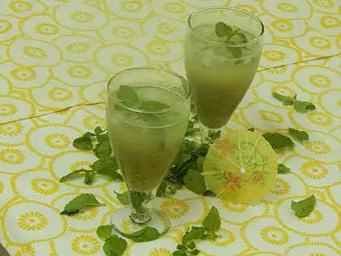
Aam pannaWild mango Amla juiceAmla
Amla juiceAmla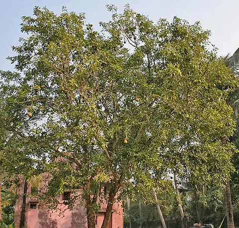
Bael sharbatBael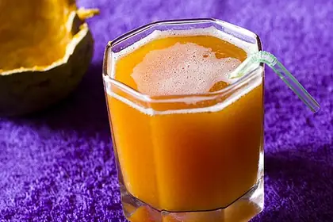
Wood apple sharbatWood apple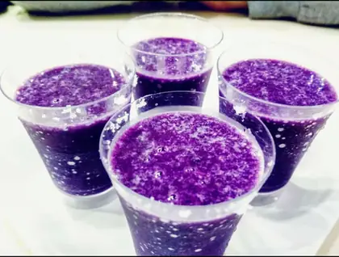
Jamun juiceJamun Phalsa sharbatWild phalsa
Phalsa sharbatWild phalsa Karonda squashKaronda
Karonda squashKaronda Buransh squashBuransh
Buransh squashBuransh Seabuckthorn juiceSeabuckthorn
Seabuckthorn juiceSeabuckthorn Himalayan berry juiceHisalu, Kafal, Kilmora, Ghain
Himalayan berry juiceHisalu, Kafal, Kilmora, Ghain Mulberry sharbatMulberry
Mulberry sharbatMulberry Imli sharbatTamarind
Imli sharbatTamarind Nungu drinkPalmyra palm
Nungu drinkPalmyra palm Neera (fresh palm sap)Wild date palm, Palmyra palm
Neera (fresh palm sap)Wild date palm, Palmyra palm Cashew apple juiceCashew apple & nut
Cashew apple juiceCashew apple & nut Moringa teaMoringa
Moringa teaMoringa Neer mor (spiced buttermilk)Curry leaves
Neer mor (spiced buttermilk)Curry leaves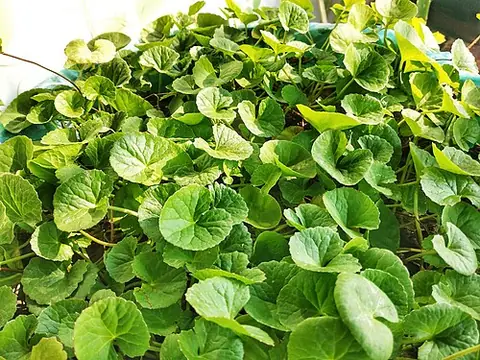
Ondelaga juiceIndian pennywort Tikhur coolerTikhur
Tikhur coolerTikhur- Sohiong juiceSohiong
 Matira juiceMatira
Matira juiceMatira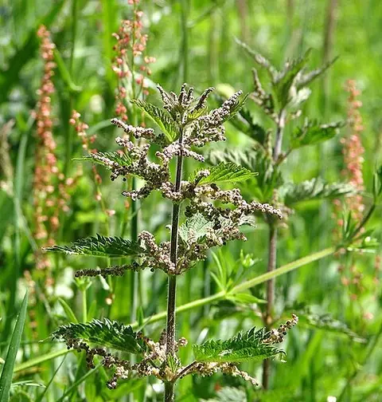
Nettle teaStinging nettle Ambade coolerHog plum
Ambade coolerHog plum
Starters & snacks
 Agase hoovina bajjiAgathi flowers & leaves
Agase hoovina bajjiAgathi flowers & leaves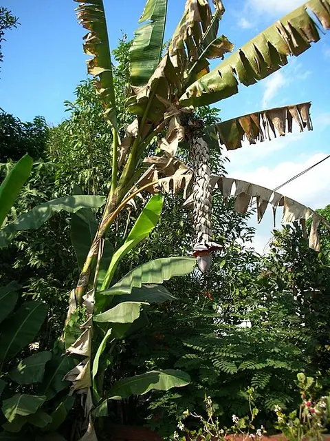
Vazhaipoo vadaiWild banana flower & stem- Drumstick leaf pakodaMoringa
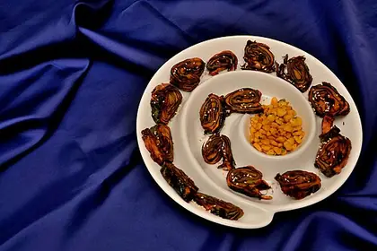
Alu vadi / patra / pathrodeColocasia leaves Basale pakorasMalabar spinach
Basale pakorasMalabar spinach Ilanthai vadaiBer
Ilanthai vadaiBer Jackfruit chipsJackfruit
Jackfruit chipsJackfruit- Roasted jackfruit seedsJackfruit
 Panang kizhanguPalm tuber
Panang kizhanguPalm tuber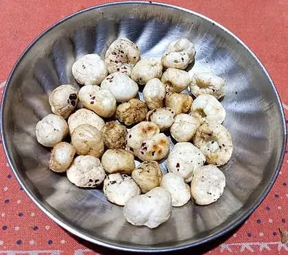
Roasted makhanaMakhana Boiled singharaWater chestnut
Boiled singharaWater chestnut Kamal kakdi chipsLotus stem & seeds
Kamal kakdi chipsLotus stem & seeds Arbi fryWild taro corms
Arbi fryWild taro corms Suran cutletsWild elephant foot yam
Suran cutletsWild elephant foot yam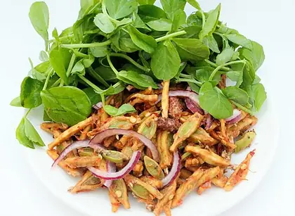
SingjuTree bean, Culantro, Fishwort Purslane saladPurslane
Purslane saladPurslane Shapla khoiWater lily seeds
Shapla khoiWater lily seeds Roasted siali seedsSiali seeds
Roasted siali seedsSiali seeds
Chutneys, pickles & raitas
 Kai chutneyRed ant chutney
Kai chutneyRed ant chutney Kaith chutneyWood apple
Kaith chutneyWood apple- Kachri chutneyKachri
- Thankuni bata / ondelaga chutneyIndian pennywort
- Karibevu podiCurry leaves
 Amla pickleAmla
Amla pickleAmla- Karonda pickleKaronda
 Lasoda pickleLasoda
Lasoda pickleLasoda Appe midi uppinakaiWild mango
Appe midi uppinakaiWild mango- Ambade uppkariHog plum
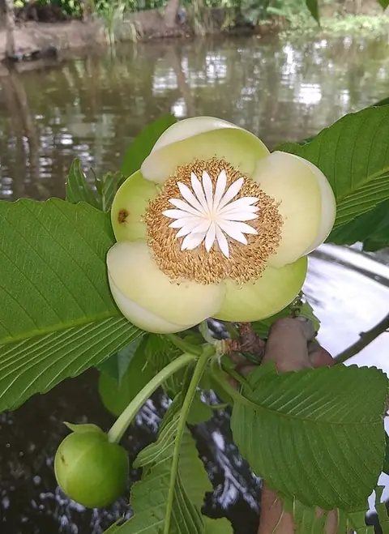
Ou tenga chutneyElephant apple Lingdu pickleFiddlehead fern
Lingdu pickleFiddlehead fern Timla pickleTimla
Timla pickleTimla Akhrot chutneyWalnut
Akhrot chutneyWalnut Imli chutneyTamarind
Imli chutneyTamarind Huli soppu chutneyWood sorrel
Huli soppu chutneyWood sorrel Phogla raitaPhog
Phogla raitaPhog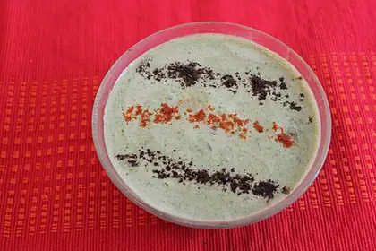
Bathua raitaBathua Ugadi pachadiNeem flowers, Wild mango, Tamarind
Ugadi pachadiNeem flowers, Wild mango, Tamarind- Karvandachi chutneyKaronda
Main course
- Shevgyachya shenganchi amtiMoringa, Tamarind
- Chinch-gulachi amtiTamarind
- Nugge soppu palyaMoringa
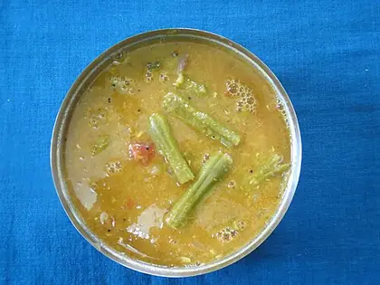
Drumstick sambarMoringa, Tamarind Dantu soppu saaruAmaranth
Dantu soppu saaruAmaranth Bathua saagBathua, Stinging nettle
Bathua saagBathua, Stinging nettle- Basale bassaruMalabar spinach
 Honagonne saaruSessile joyweed
Honagonne saaruSessile joyweed- Kandali saagStinging nettle
 Kalmi saagWater spinach
Kalmi saagWater spinach Takla bhaji / chakoda bhajiSickle senna
Takla bhaji / chakoda bhajiSickle senna Kartoli bhaji / kantola sabziSpiny gourd
Kartoli bhaji / kantola sabziSpiny gourd Tondli bhajiIvy gourd
Tondli bhajiIvy gourd Ker sangriKer, Khejri (sangri)
Ker sangriKer, Khejri (sangri)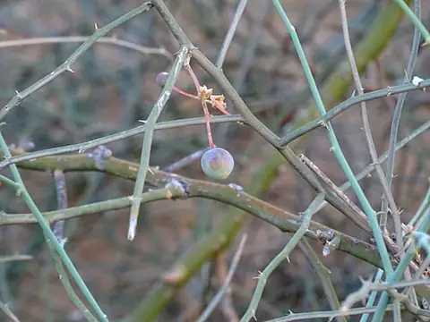
PanchkutaKer, Khejri (sangri), Kachri, Kumat, Lasoda Kachnar ki sabziKachnar buds
Kachnar ki sabziKachnar buds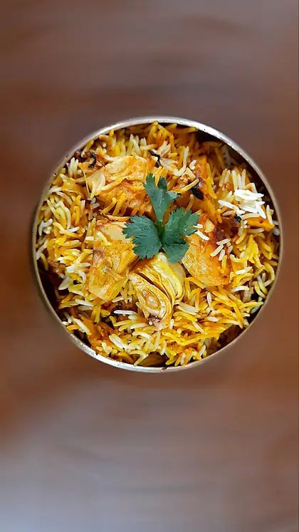
Kathal biryaniJackfruit Kalale palyaBamboo shoots
Kalale palyaBamboo shoots Bamboo shoot porkBamboo shoots
Bamboo shoot porkBamboo shoots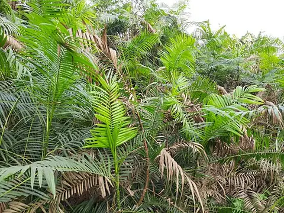
Bet gaaj bhajiCane shoots- Lingdu bhajiFiddlehead fern
- Nadru yakhniLotus stem & seeds
- Chena erisseryWild elephant foot yam
 Wild yam curryWild yam
Wild yam curryWild yam Eromba with yongchakTree bean
Eromba with yongchakTree bean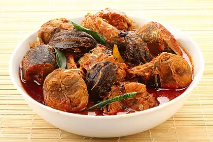
Kudampuli fish curryMalabar tamarind Kokum saaruKokum
Kokum saaruKokum- Ou tenga dalElephant apple
 PuliyogareTamarind, Curry leaves
PuliyogareTamarind, Curry leaves Veppam poo rasamNeem flowers, Tamarind
Veppam poo rasamNeem flowers, Tamarind Tisryo masalaClams & shellfish
Tisryo masalaClams & shellfish Nandu rasam / kekda curryPaddy crabs
Nandu rasam / kekda curryPaddy crabs Gugli curryPaddy snails & small fish
Gugli curryPaddy snails & small fish Jambu tadka dalJambu (Himalayan wild onion)
Jambu tadka dalJambu (Himalayan wild onion) Shatavari stir-fryWild asparagus shoots
Shatavari stir-fryWild asparagus shoots Atti kai palyaCluster fig
Atti kai palyaCluster fig Mahua bhatMahua
Mahua bhatMahua Wild mung dalWild mung
Wild mung dalWild mung Rice bean with porkRice bean
Rice bean with porkRice bean
Breads & rice
- Bathua parathaBathua
- Moringa theplaMoringa
- SograMatira
- Singhara atta puriWater chestnut
- Wild greens dosaAmaranth, Malabar spinach, Sessile joyweed
 Bhagar / nivara khichdiWild rice, Jungle rice
Bhagar / nivara khichdiWild rice, Jungle rice Bhurat rotiBhurat
Bhurat rotiBhurat Bamboo riceBamboo rice
Bamboo riceBamboo rice
Desserts
- Mahua laddooMahua
- Tikhur barfiTikhur
- Bamboo rice payasamBamboo rice
 Makhana kheerMakhana, Chironji
Makhana kheerMakhana, Chironji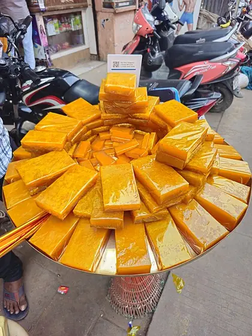
Aam papadWild mango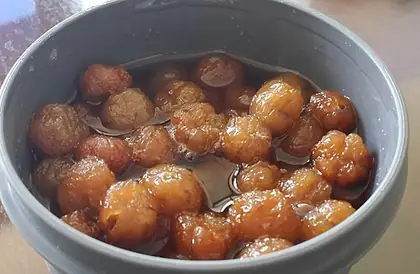
Amla murabbaAmla- Chakka varattiJackfruit
 Jamun sorbetJamun
Jamun sorbetJamun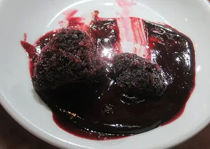
Mulberry jamMulberry Guava cheeseFeral guava
Guava cheeseFeral guava- Himalayan berry jamHisalu, Kilmora, Ghain, Kafal
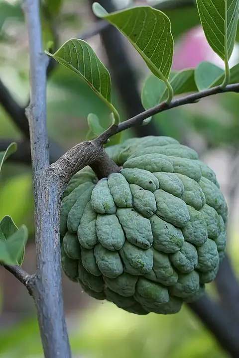
Sitaphal basundiWild custard apple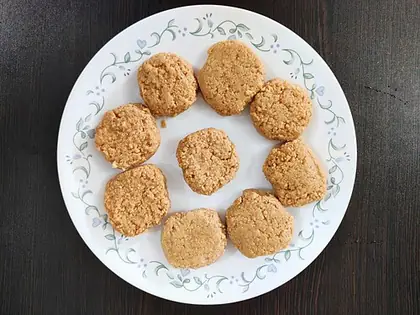
Nolen gur sandeshWild date palm Chironji barfiChironji
Chironji barfiChironji